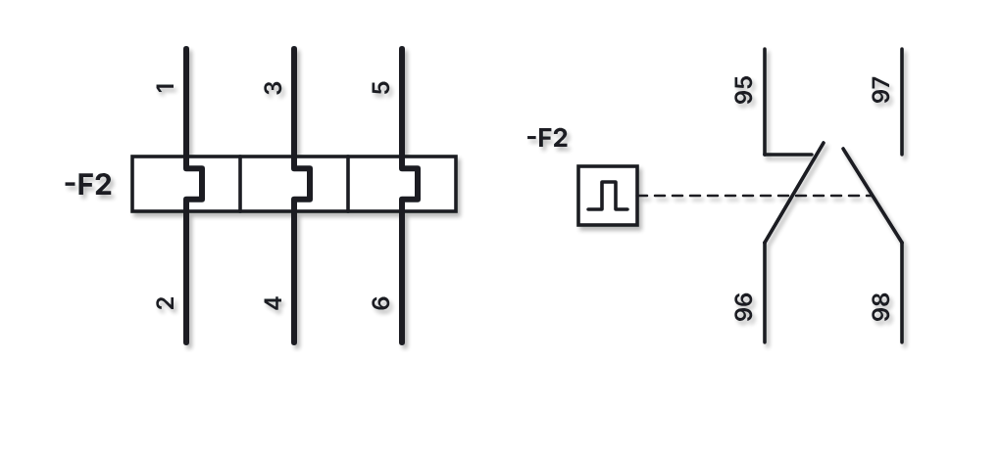
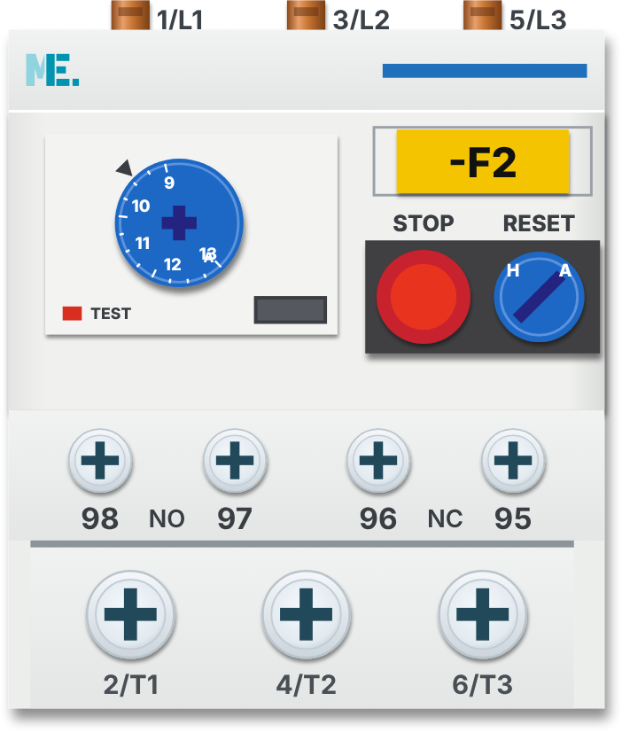

RELÉ TÉRMICO · CHINT NR2-25
Su símbolo en el equipo IEC 60617: cada letra del símbolo está en el equipo real


A
ENTRADA 1 · 3 · 5llega del contactor (1/L1, 3/L2, 5/L3)
B
SALIDA 2 · 4 · 6va al motor (2/T1, 4/T2, 6/T3)
C
ELEMENTO TÉRMICOlos bimetales; su corriente se ajusta en el dial
D
95-96 · NCcerrado; abre al disparar → corta la bobina
E
97-98 · NAabierto; cierra al disparar → piloto de falla
-F2Designación IEC 81346: la misma en el diagrama y en la placa amarilla del equipo.
LÍNEA PUNTEADAune el mando térmico con sus contactos: 95-96 y 97-98 cambian juntos.
Fuentes: IEC 60617 (símbolos) · IEC 81346-2 (-F) · IEC 60947-4-1 / EN 50005 (95-96, 97-98) · CHINT, NR2 User Instruction (marcado de bornes) · Foto: ilustración @miguelesquit basada en el CHINT NR2-25 (larssystemgt.com/1347) · símbolo de la librería del canal

@miguelesquit